This guide follows the tool screen by screen. Use the contents list to jump to a section; every heading carries the code the cross-references use.
Home
LexiQamus offers two distinct ways of searching. The Search tab is for looking up the meaning of a word you can read in the dictionaries; the Word Decoder is for finding a word you cannot read, starting out from the clues you do have. You can move between the two tabs freely.
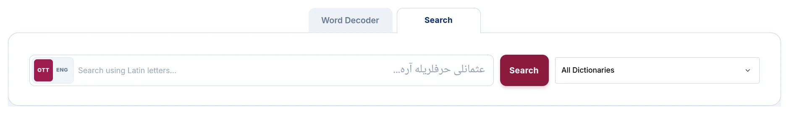
Choosing dictionaries
The dictionary list sits to the right of the Search button. You can run your search across every dictionary, or only within the ones you choose: open the list, clear Select All, and tick the works you want one by one.
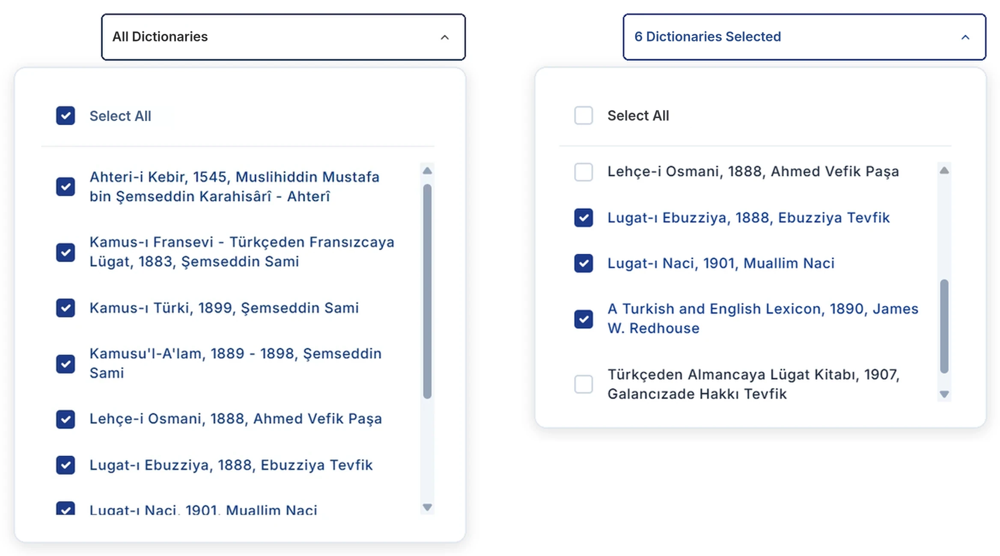
The Search Tab
Use this tab to search for a word you can read and to see its equivalents in the dictionaries.
The search bar
The search bar is a single field in which you can type the word in either alphabet: the left half is for Latin script, the right half for Ottoman script. If you know how the word is read, typing it on the Latin side is enough.

OTT and ENG: where the search runs
The OTT and ENG buttons at the start of the bar determine where what you type will be searched. With OTT selected, the search runs among the Ottoman words in every dictionary in the database.
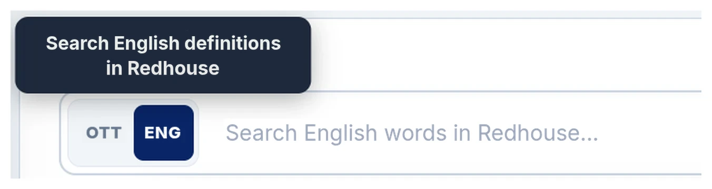
ENG: searching the English definitions
The ENG option runs a full-text search in James Redhouse’s dictionary A Turkish and English Lexicon. Because we have digitized this work as full text, the English equivalents of its entries are searchable too: every entry whose definition contains the English word you type is listed. The word you searched for is highlighted in color within the definitions.
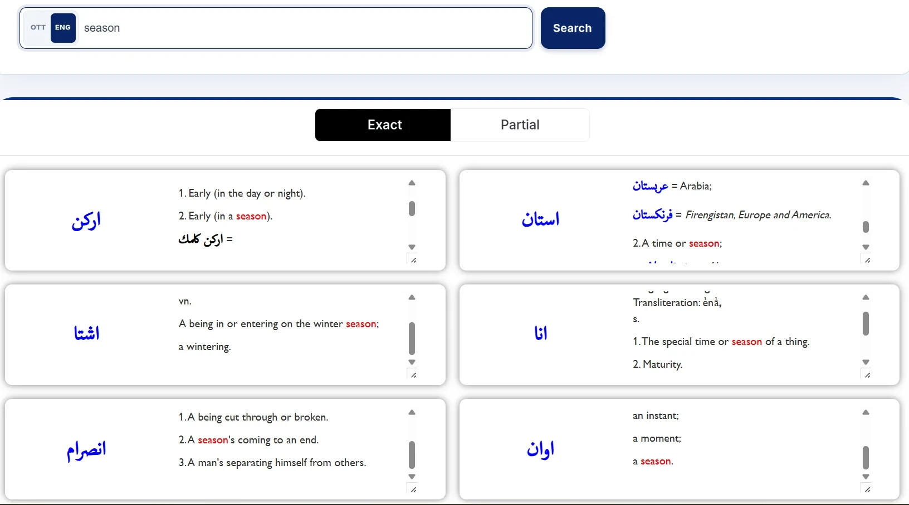
Typing in Ottoman script
When you click the Ottoman side, an on-screen keyboard opens. You can write by clicking the letters one by one.
You do not have to use the keyboard, though. Every key shows the physical keyboard key that corresponds to that letter: the A key gives ا, the B key gives ب, and SHF+S gives ص. So you can type the word quickly on your own keyboard and only look at the screen for the letters you are unsure of.
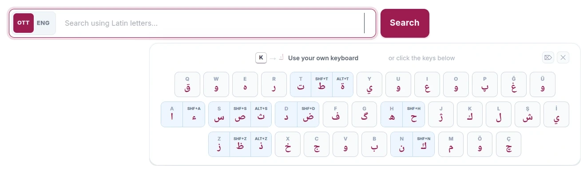
Search Results
Both ways of searching lead you to the same results list. At the head of the list you see how many records were found and how many dictionaries and volumes were scanned. The list is divided into four columns, and each row shows a single record in one dictionary. The word you searched for is listed separately under the headings Lemma, Inflected Forms, Derived Forms, Phrases and Compounds and Similar Spellings, running from the plainest form to the broadest.
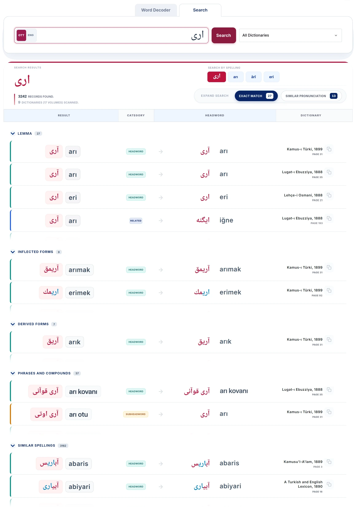
Word categories
The category label tells you what kind of relation the result has to its entry. Each category has its own color: the label, the line at the left of the row and the boxes on the dictionary page are all shown in that color.
Headword: the title of an entry that has been opened in the dictionary in its own right.
Subheadword: a sub-entry that sits under a headword and is given a definition of its own.
Related: words that occur within the entry and are connected to the headword semantically or etymologically.
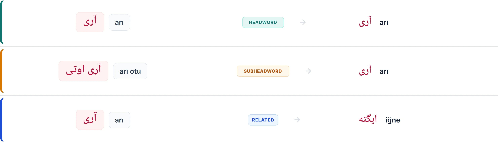
Two click zones in a row
Clicking the row two zones, two destinations
Every row is divided into two separate zones, and when you bring the cursor over the row the zone you are in is shown in color. Clicking these areas takes you to different places within the same entry.
The left zone, that is, the result word itself: Go to this result. The original dictionary page opens and takes you straight to the place where the word occurs. From there you can also scroll up to the beginning of the entry.
The right zone, that is, the headword and the dictionary information: Go to the headword. The same page opens, but this time you land directly at the beginning of the entry.
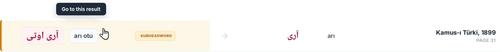
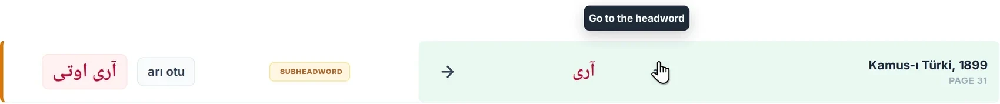
Clicking a word a search in a new tab
A result row holds four result values: the (1) Ottoman spelling and (2) Latin reading of the result, and the (3) Ottoman spelling and (4) Latin reading of the headword. When you bring the cursor exactly over one of these words, the Search this word hint appears. Click it and that word is searched across every dictionary, with the results opening in a new tab; the results page you are on stays exactly as it was. In this way you can follow up a word that catches your eye in a result or a headword without losing your search.
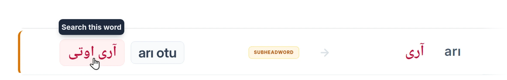
Dictionary and reference
The button at the far right of the row opens the bibliographic information for that record. The title of the work, its author, year, volume and page are all gathered here.
In the reference window the citation is offered ready-made in three styles: APA, Chicago and Harvard. Choose the style you need and copy it with a single button.
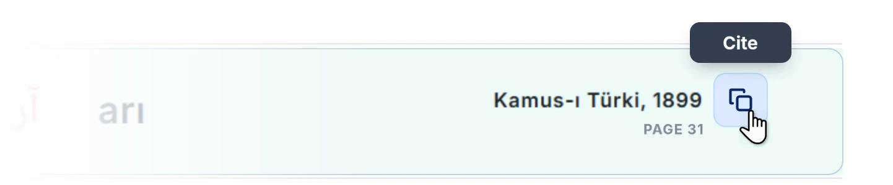
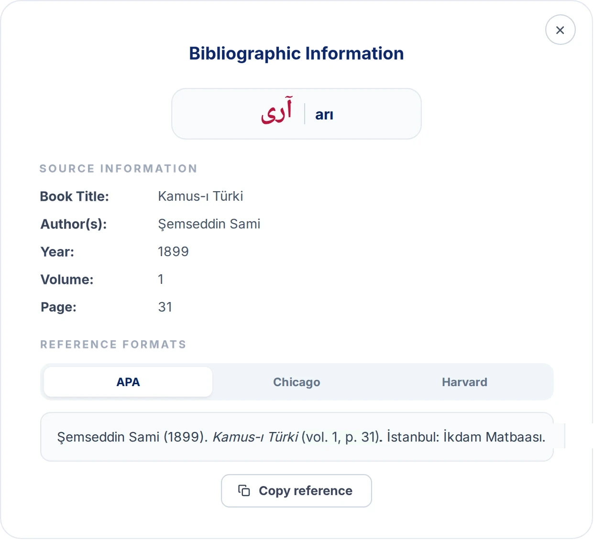
Latin readings
Two states automatic generation and editorial approval
In the result rows every Ottoman word is accompanied by a Latin reading. Some of these readings were entered by our team and approved after being checked by another team member (peer review). The rest were generated automatically from the Ottoman spelling and may therefore not always be accurate.
You can tell the two apart at first glance: automatically generated readings are shown in a pale tone, editor-approved readings in a dark one. The nazar in the first two rows below is automatically generated; the one in the third row is editor-approved.
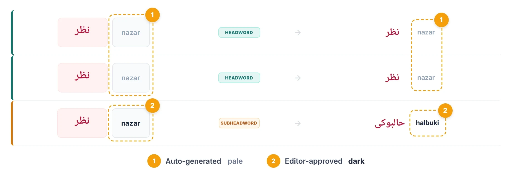
Correct approving a reading
When you bring the cursor onto a reading, a small box opens beside it. The label at the head of the box tells you the state of the reading: Auto-generated or Editor-approved. The two buttons beneath it are there for you to give us feedback about the reading.
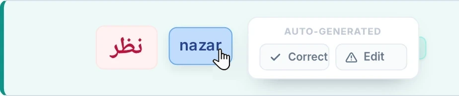
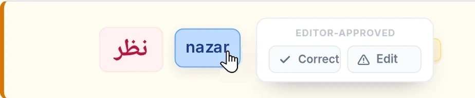
With the Correct button you report in a single click that the reading is accurate; the button turns green. On automatically generated readings this mark helps us see which readings are right. Our editors check the readings that are marked; a reading that passes the check becomes Editor-approved and starts to be shown in the dark tone.
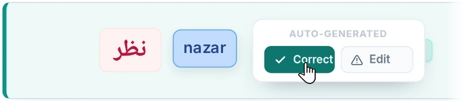
Edit reporting a correction
The Edit button opens a report window. At the head of the window stand the Ottoman spelling of the word and its reading, with three options below them. The Incorrect option comes selected when the window opens and asks you to explain why the reading is wrong; if you know the right one, you can write that too. If you want to state that the reading is correct and add a note, you choose Correct; in that case writing a note is optional. And if there is something you would like to say about the reading without calling it right or wrong, you use Comment.
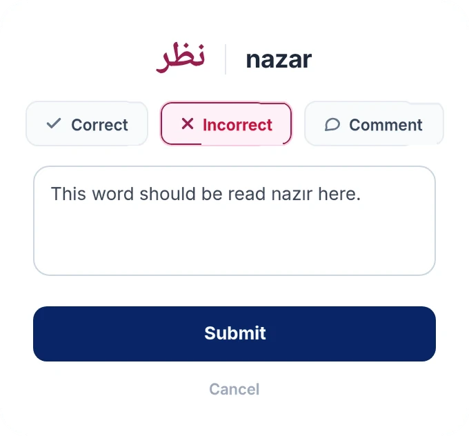
When you write your explanation and press Submit, your report reaches us and a thank-you message appears in the window. Our editors review the reports that come in; the reading is corrected if need be and, after the check, becomes Editor-approved. If you change your mind, simply press Cancel.

Different spellings of the same word
The Ottoman alphabet has letters that are read identically, or very nearly so, in Turkish pronunciation: ث and س, or ت and ط. Nor was there any standard of orthography in the pre-modern period; more than one form was in use, especially in writing Turkish words in Ottoman letters. The word you are looking for may therefore escape you simply because the dictionary spells it differently.
The two tools at the top right of the results list solve this problem. Search by Spelling shows the other spellings of the word recorded in the dictionaries; Similar Pronunciation widens the list by searching phonetically similar letters as well.
Search by Spelling the other recorded spellings
These buttons are not a guess; they come from the records we entered into the system as data while digitizing the dictionaries.
In the example below, merdiven has been searched. You can see that the word has three separate spellings in the dictionaries: مردوان, مرديون and نردبان. The results in the list come from these spellings, and the left of each row shows which spelling it came from. When you click one of the buttons, the search is rerun directly with that spelling and opens in a new tab.
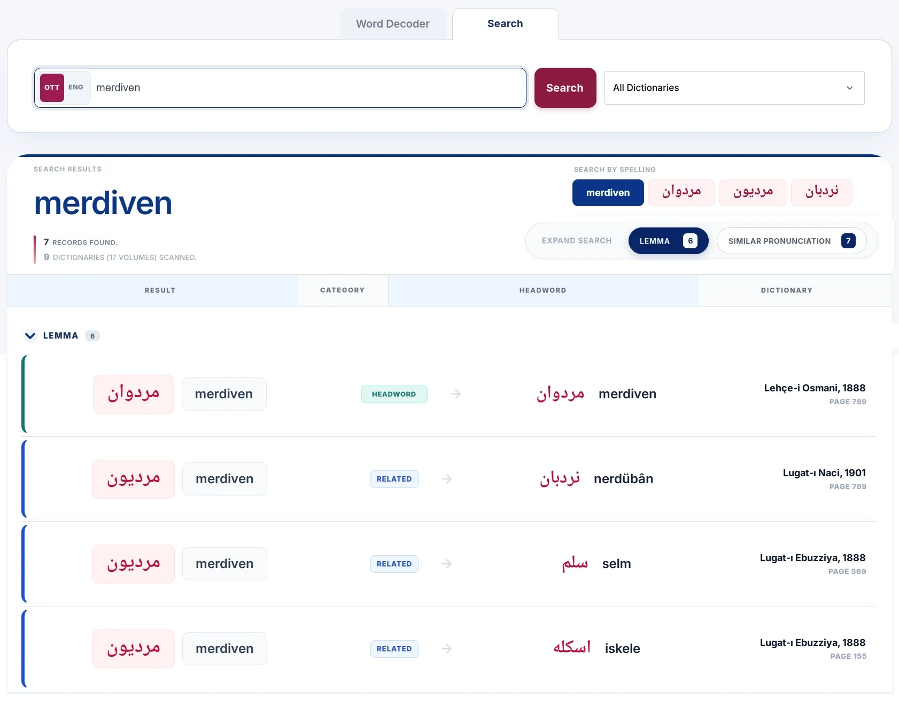
Similar Pronunciation phonetically similar letters
The button searches by putting phonetically similar letters in place of the ones in your search; the number beside it shows how many results the expansion has brought in.
In the example below پاسترمه has been searched. The list shows the results for the spelling you searched for; two records were found with this spelling in the dictionaries.
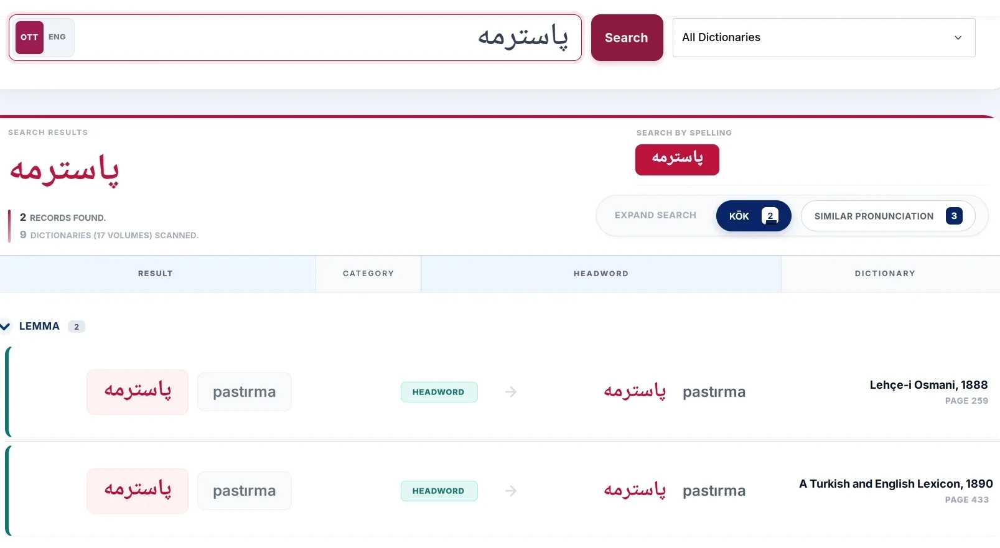
When you press the Similar Pronunciation button, the search is widened by putting ب in place of پ and ط in place of ت. Three more records come up: باسترمه, باسطرمه and پاسطرمه.
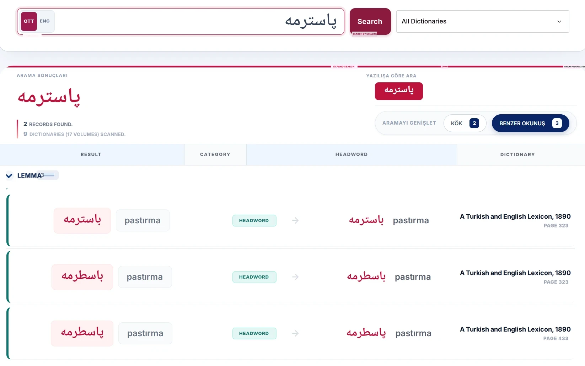
These are other spellings of the word you are looking for in the dictionaries. At a single touch you thus reach records you could not have known to search for — most of the time could not even have guessed at — and the meanings they carry.
Scan for Similar Matches
If you could not find what you were looking for in the list, press this button at the bottom of the page.
LexiQamus scans for words that stand letter by letter close to the spelling you entered and brings them before you as a numbered list.
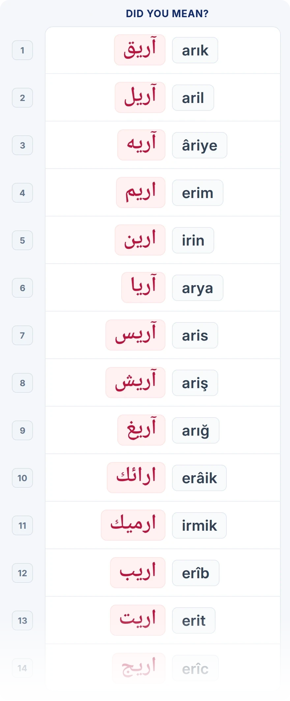
The Original Dictionary Page
When you click a result or headword zone, the original page of the dictionary opens in a window. What you see is not merely a scanned page: the digitized words are shown on the page in colored boxes according to their categories, and the page is interactive throughout.
When you bring the cursor onto a box you see the Ottoman spelling and the Latin reading of the word, and when you click it you start a new search for that word. You can view the entry as a slice, a column or a page, move through the dictionary with the arrows, and report an error from the very same place when you notice one.
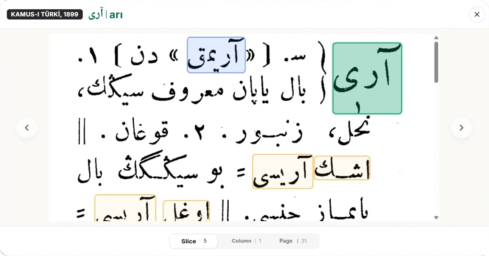
Slice, Column, Page
When the window first opens, the Slice view is active, as in the overview above. A slice is the part of a single dictionary entry that falls within one column. Often, though, you come across this: an entry’s definition begins in one column and ends in the next. In such cases the entry consists of two slices. With headwords that have longer definitions (e.g. “baş”, “bir”, “göz”), an entry may spread over several columns and so consist of more than one slice.
When you click Column, the whole column opens. When you click Page, you see the entire page. The digitized words stay marked in all three views.
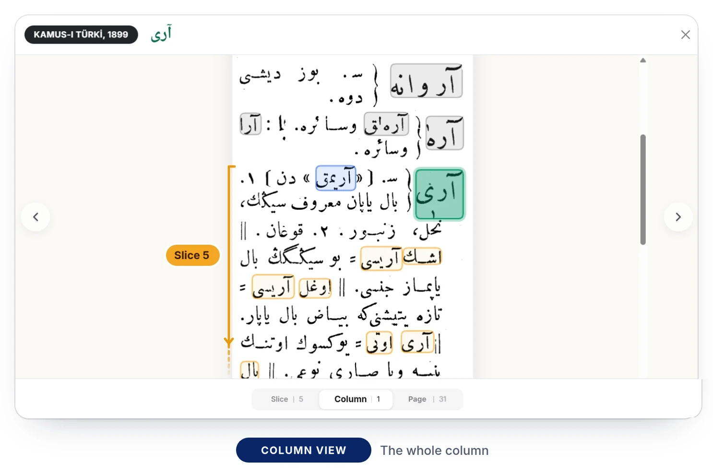
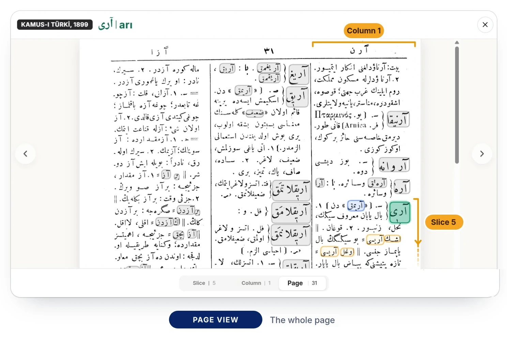
Colored and gray boxes
The words in the entry that have been digitized are enclosed in boxes on the original page. The color of a box changes according to the word category; the same distinction between categories as in the results list holds here too.
The words that appear gray have been digitized as well. When you bring the cursor onto them they take on their color and their digital values become visible.
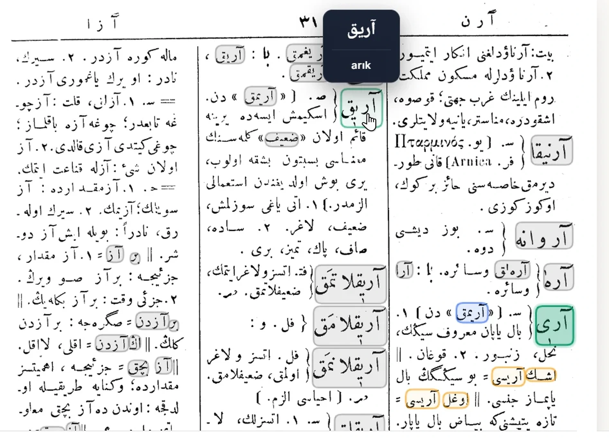
The digital value of a word
A single word spelling and reading
When you bring the cursor onto a box, the Ottoman spelling and the Latin reading of the word appear one below the other.
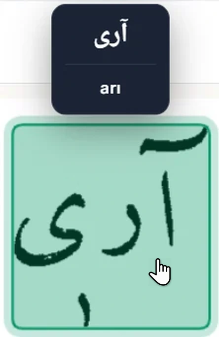
Part of a phrase two layers
If the word is part of a phrase, you see two layers at once: above, the digital value of the word the cursor is on; below, the digital value of the phrase as a whole.
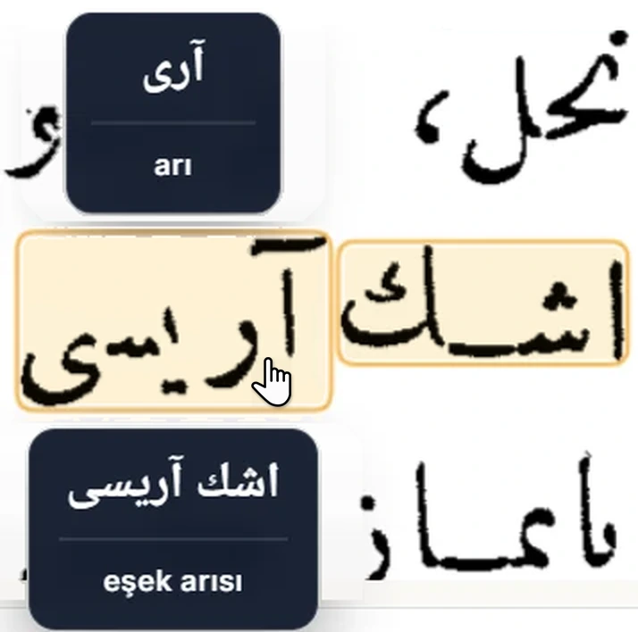
Clicking a word
When you click a word on the original page, or one of the digital values that appear, a new search for that word begins and opens in a new tab. You can thus take side roads without leaving the entry you are reading.
Each of the five places marked in the image below starts such a search: the word on the dictionary page, and the Ottoman and Latin lines of the boxes that appear above and below it.
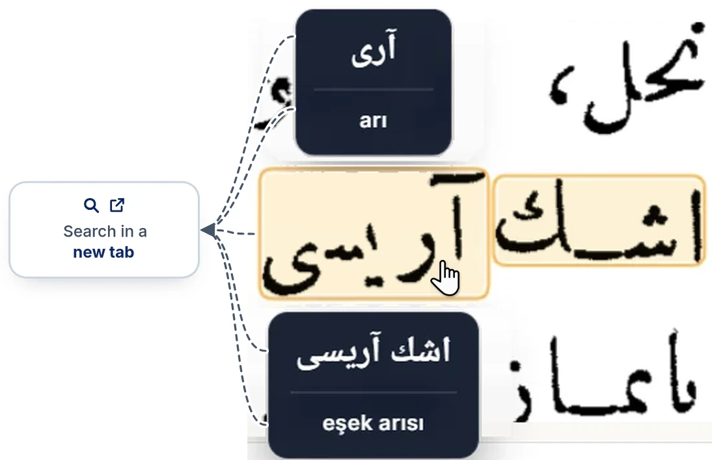
Reporting an error
If you think there is a mistake in the digitization, bring the cursor onto the word. A light blue warning sign appears beside the digital value of the word. When you bring the cursor onto that sign it turns red and the words Report Error appear; press it and the report window opens.
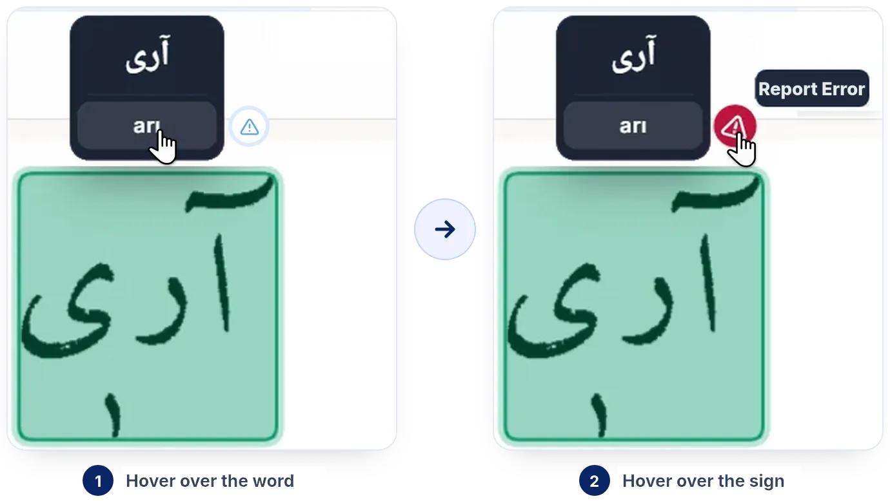
The word comes ready-filled in the window that opens. You write the error, or the correction you propose, in the field beneath it and submit it.
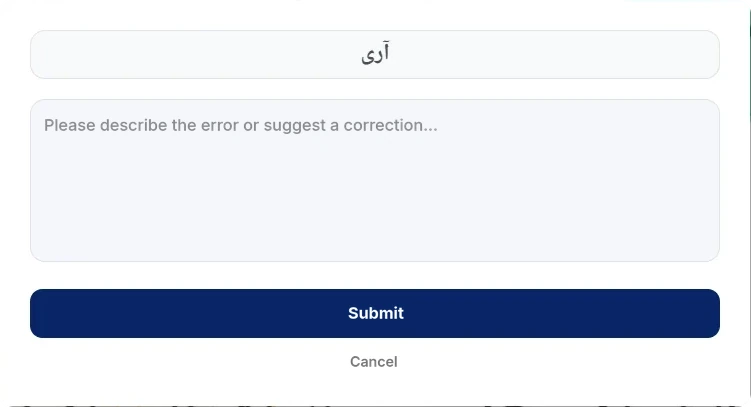
The Word Decoder
This is the tool to use when you come across a word you cannot read in a manuscript. You enter the letters you can read and leave a marker for those you cannot; LexiQamus lists the words that match these criteria.
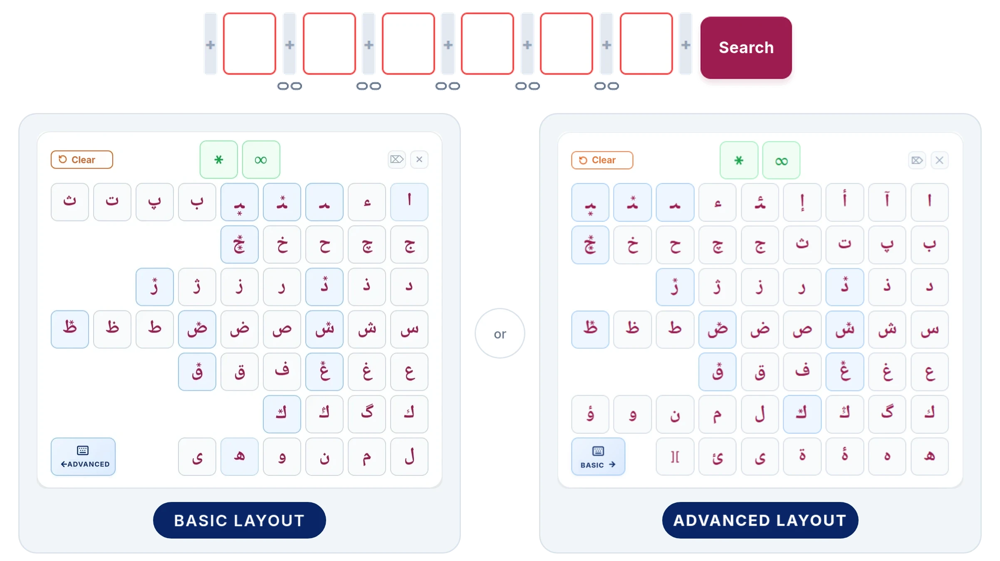
The decoder keyboard
The basic and the advanced keyboard two keyboards, one search
The basic keyboard that opens when you click a box offers every letter of the Ottoman alphabet on a single key. You write by clicking the letters; if you prefer, you can also type into the boxes from your own keyboard.
The basic keyboard is entirely sufficient for searching and for finding results. A letter may have different written forms; when you enter that letter on the basic keyboard, all of those forms are searched anyway. The elif (ا) key, for example, covers the elifs with medde and hemze (آ, أ, إ) as well.
The Advanced button at the bottom left of the keyboard opens a keyboard that shows these forms as separate keys. You can use it if you know the spelling of the word you are looking for exactly and want to keep the results that narrow; ordinary searches do not call for it.
The ][ key on the advanced keyboard is the zero-width character. In some suffixed words the suffix is written without being joined to the letter it would normally connect to: the word kediye may appear as کدییه rather than کدییه. This key places an unjoined transition at that point, so that you find such words without using a space and widening the results needlessly.
Letters ordinary and special characters
When you click a box, the letter keyboard opens. From it you can enter both the ordinary letters and the special characters that stand for letters of similar shape.
The starred blue keys on the keyboard are these special characters. Each of them searches at once all the letters that share the same skeleton and differ only in their dots; you can use them for a letter whose dots you cannot make out. (Like the whole logic of searching with boxes, the starred characters are an innovation developed by LexiQamus; for the details see LexiQamus 1.0.)
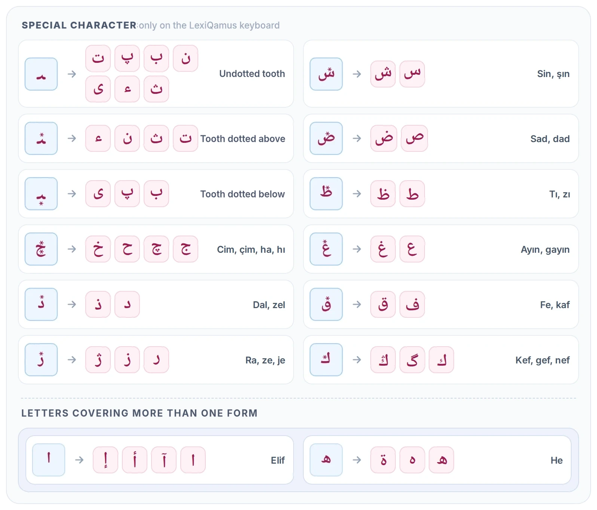
You do not have to click the keys. As you are reminded when you bring the cursor onto a box, you can write the letters on your own keyboard too.
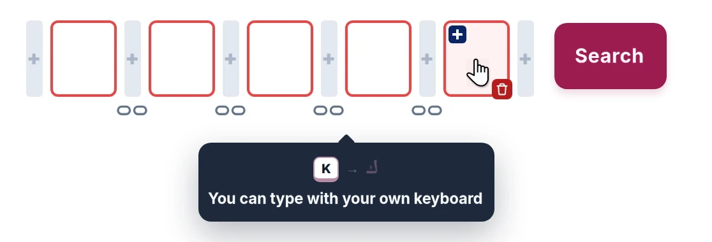
and letters that cannot be read
The two green keys at the top are important. means a single letter that cannot be read. means one or more unreadable letters of unknown number. If your search is not yielding results, you can widen it by placing these markers where you are unsure.
The boxes
Boxes and chains joined, separate, uncertain
Each box stands for one character.
With the buttons between the boxes you add a new box in between. The chain marks beneath the boxes show whether the letters are joined; stating this narrows the results.
A chain has three states, and it changes through them in turn as you click it:
- Letters separate
- Letters connected
- Uncertain
Where you cannot make out whether they are joined, if you choose Uncertain both possibilities are searched.
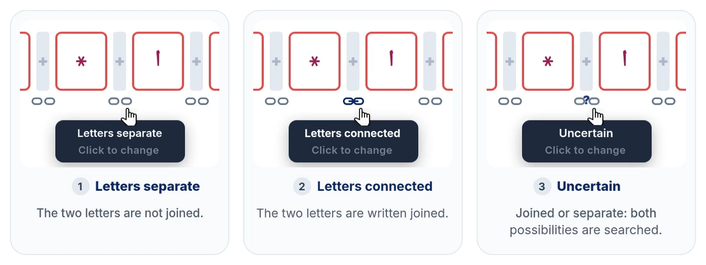
Box buttons adding, deleting, alternatives
When you bring the cursor onto a box, two small buttons appear at its corners and a trash can beneath it. The gray bars between the boxes are for adding a new box:
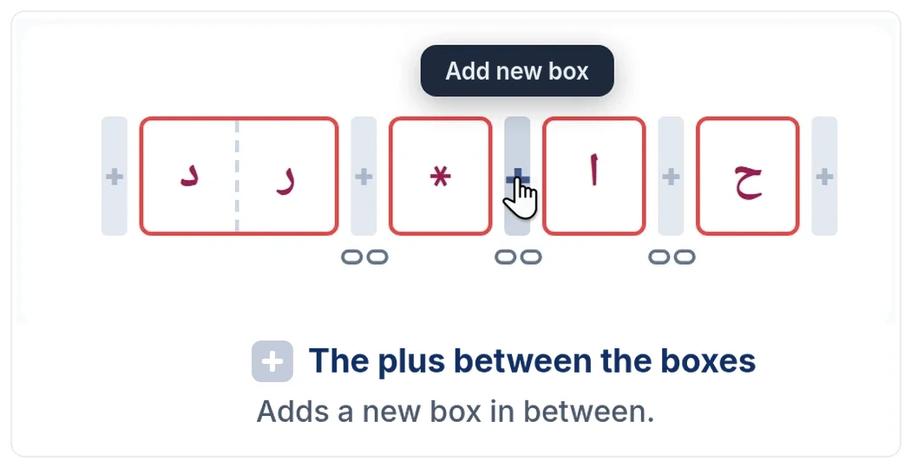
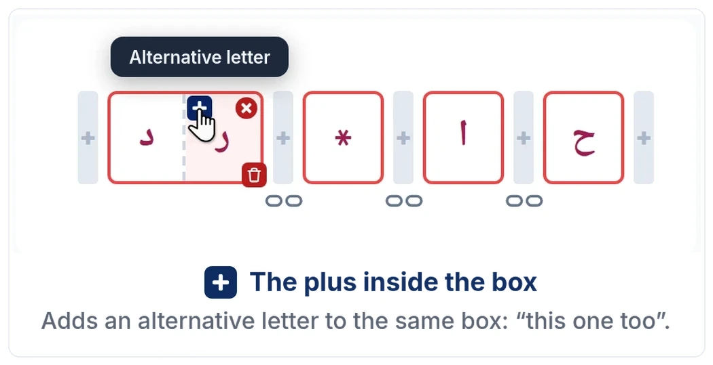
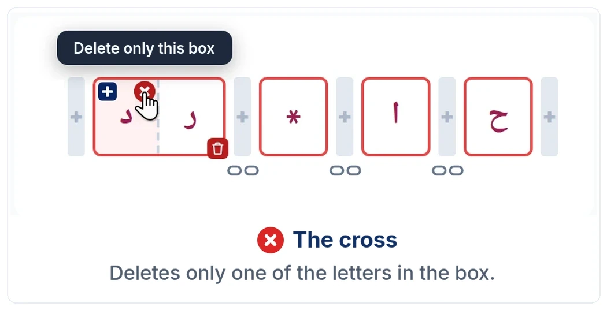
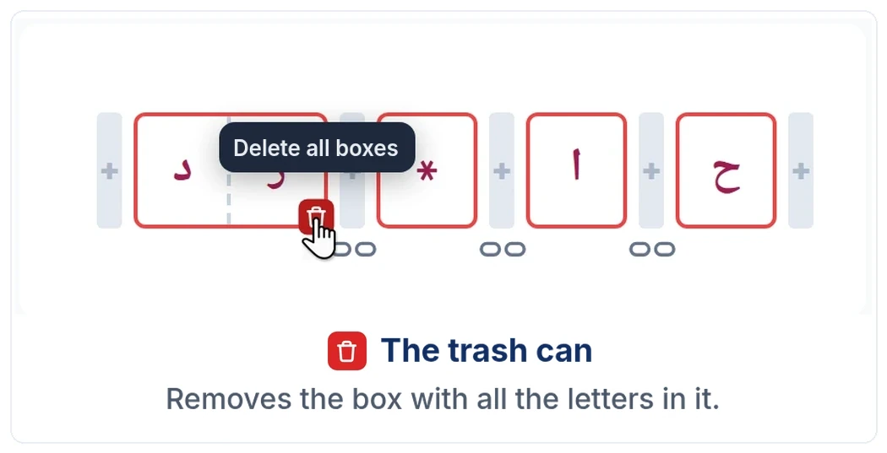
More than one letter in a single box letters that get confused
You can also enter more than one letter into a box. With letters that are easily confused with one another, such as و, د and ر, you put all the possibilities into the same box and so have them all searched at once. You add an alternative letter with the button inside the box.
In the example below, single-letter boxes, boxes with two and three alternatives, a for a letter that cannot be read and a starred letter appear together; the chains beneath the boxes, too, are in the connected, uncertain and separate states.
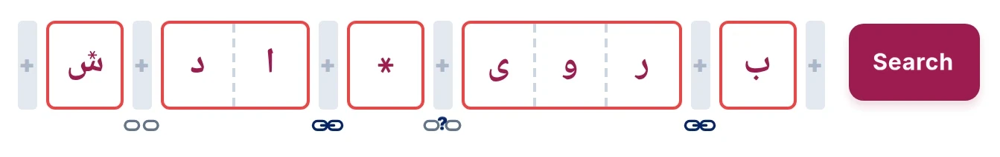
You can also add an empty box beside the alternative letters. An empty box means “there may be no letter here”: the search then also takes into account results with no letter at that part of the word.
An example search
Say you have come across the word below in a document. Ink has been spilled over it and one letter cannot be read; but you can make out the other letters.
You enter the letters you can read into the boxes according to their places, and put a in place of the letter you cannot read:
حا٭ر
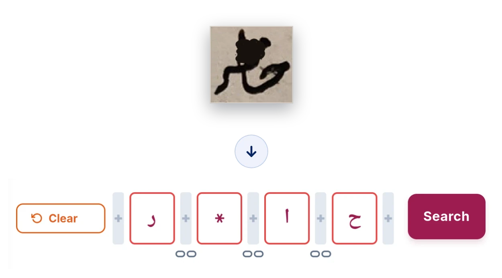
Results
When you press the Search button, the records that match the clues you have entered are listed — in some cases from among millions of possibilities. The results are gathered under headings running from the plainest form to the broadest.
The result rows work in just the same way as the search results in the Search tab. You can find their categories, click zones and bibliographic information in the Search Results section.
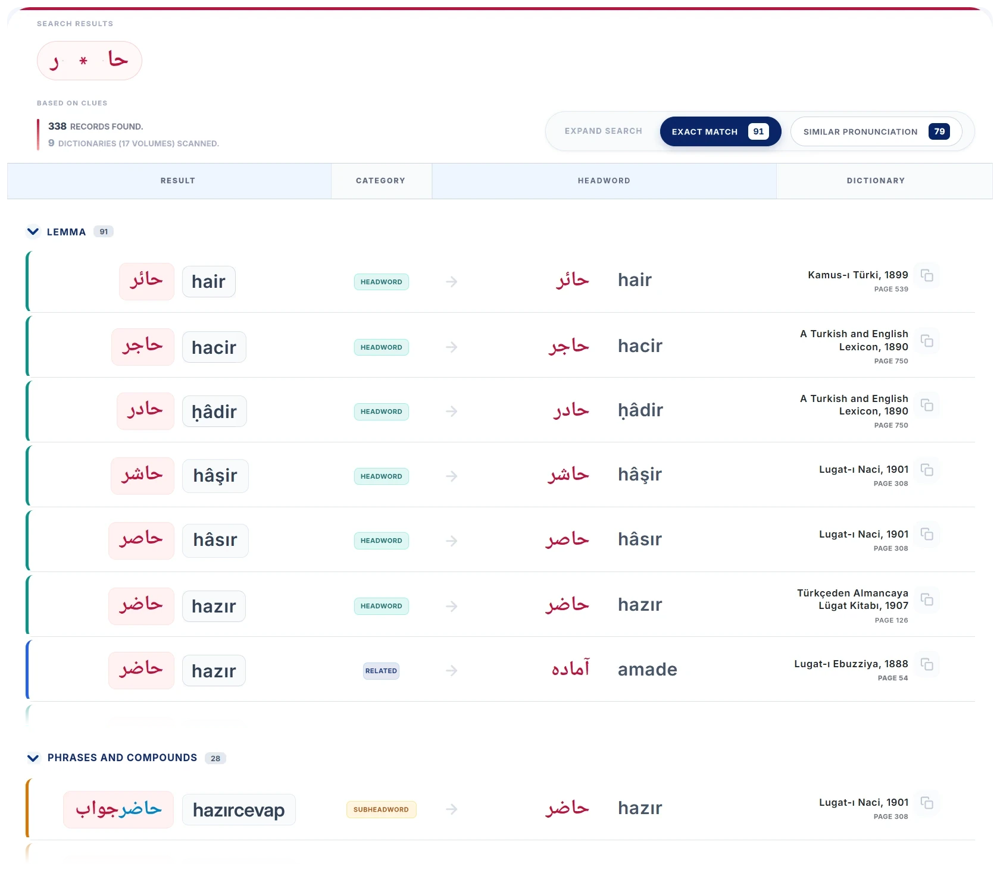